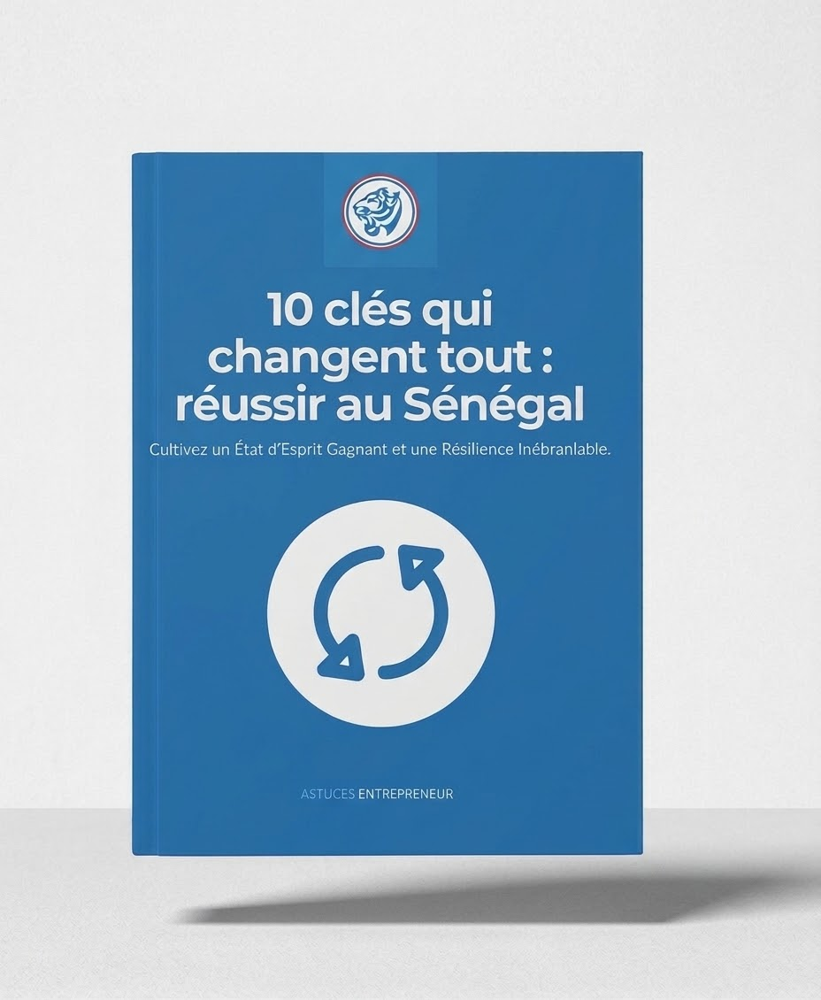

ENTREPRENEUR · CONSULTANT · FORMATEUR
Faire grandir les idées.
Construire l’impact.
J’accompagne les entrepreneurs, les startups et les organisations dans la structuration de leurs projets, leur stratégie marketing et leur transformation digitale. Mon approche associe vision, méthode et transmission.
Des idées transformées
en actions concrètes.
DOMAINES D’INTERVENTION
Relier la vision
à l’action.
Une approche transversale au croisement de l’entrepreneuriat, du management, de l’innovation et du numérique.
Entrepreneuriat
& incubation
Faire émerger, structurer et accompagner des initiatives entrepreneuriales viables.
↗ 02 / STRATÉGIEMarketing &
communication
Clarifier le positionnement, les priorités et les leviers de développement.
↗ 03 / DIGITALTransformation
digitale
Faire du numérique un levier de performance et d’évolution.
↗ 04 / TRANSMISSIONFormation &
coaching
Renforcer les compétences et transformer les apprentissages en résultats.
↗INITIATIVE ENTREPRENEURIALE · 2019
Une idée devient
un impact.
Astuces Entrepreneur est une plateforme dédiée à la promotion de la culture entrepreneuriale et au renforcement des capacités des jeunes. Elle constitue l’une des initiatives de son parcours entrepreneurial.
Découvrir cette initiative ↗
PUBLICATION
10 clés qui changent tout :
réussir au Sénégal.
Un ouvrage consacré aux repères, aux réflexions et aux leviers utiles pour avancer dans son parcours entrepreneurial au Sénégal.
En savoir plus →DONNONS FORME À VOS AMBITIONS